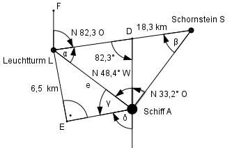

Aufgabe 210 Um seine Position genau zu bestimmen, peilt ein Schiff einen Leuchtturm unter N 48,4° W und einen Schornstein unter N 33,2° O an. Schornstein und Leuchtturm liegen 18,3 km auseinander. Der Schornstein liegt in Richtung N 82,3° O vom Leuchtturm aus gesehen. Wie groß ist die Entfernung e des Schiffes vom Leuchtturm, und welchen Kurs muss es fahren, damit es an ihm im Abstand von 6,5 Seemeilen vorbeifährt?

α = 180° - 48,4° - 82,3° = 49,3° β = 180° - 33,2° - (180° - 82,3°) = 49,1° Im Dreieck LAS: Sinussatz: Fall SWW: LS e ---------------------- = ------- | *sin β sin (48,4° + 33,2°) sin β LS * sin β 18,3 km * sin 49,1° e = -------------- = ----------------------- = sin 81,6° sin 81,6° 18,3 km * 0,7559 = --------------------- = 14 km 0,9893 Im Dreieck LEA: 6,5 sm = 6,5 * 1,852 = 12,04 km 12,04 km sin γ = ------------ = 0,86 --> γ = 59,3° 14 km Kurswinkel δ = 180° - γ – 48,4° = = 180° - 59,3° - 48,4° = 72,3° Kurs S 72,3° W